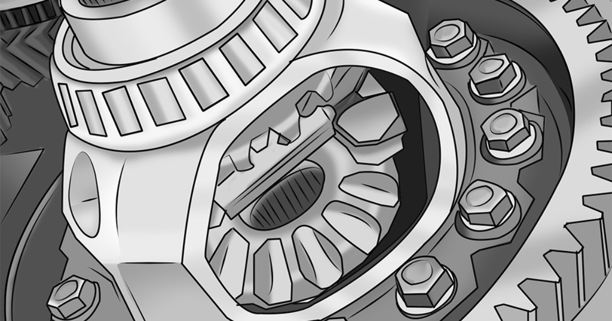
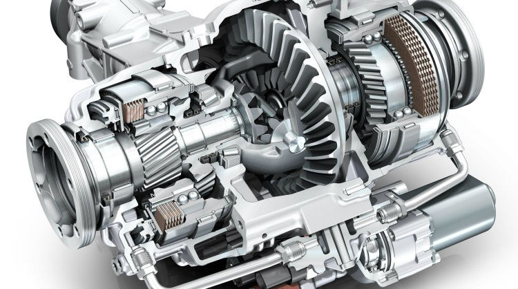

 Дифференциал нь хөдөлгүүрийн эргүүлэх хүчийг хөтлөгч тэнхлэгт дамжуулах үүрэгтэй. Тэнхлэгт дамжуулагдсан хүч нь дугуйг эргүүлнэ. Эргэлтэн дээр автомашины дотор болон гадна дугуйны эргэлт нь харилцан адилгүй байдаг бөгөөд дифференциал нь тойрогны гадна талын дугуйг дотор талаас илүү хурдан эргүүлж өгдөг. Гадна тойргоор эргэж байгаа дугуй нь дотор тойргоор эргэж байгаатайгаа харьцуулахад ижил хугацаанд их зам туулна. Энэ нь гадна дугуй нь дотор талын дугуйнаасаа илүү хурдтай эргэх ёстойг харуулж байна. Хөтлөгдөх тэнхлэгийн дугуй нь өөрийнхөө гол дээр чөлөөтэй суух тул шаардлагатай эргэлтийн хурд нь өөрөө тогтоогдsдог. Харин хөтлөх дугуйнууд нь хагас голтой холбогдож эргэлтийг түүнээс авдаг. Иймд хөтлөх дугуйнуудад өөр өөр хурдтай эргэх боломж олгох шаардлагатай. Үүнийг гүйцэтгэдэг механизмыг дифференциал гэж нэрлэдэг.

Дифференциал гэмтсэн эвдэрсэн шинж тэмдгүүд